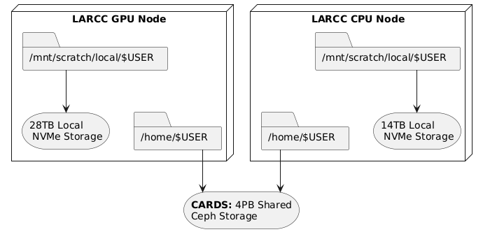
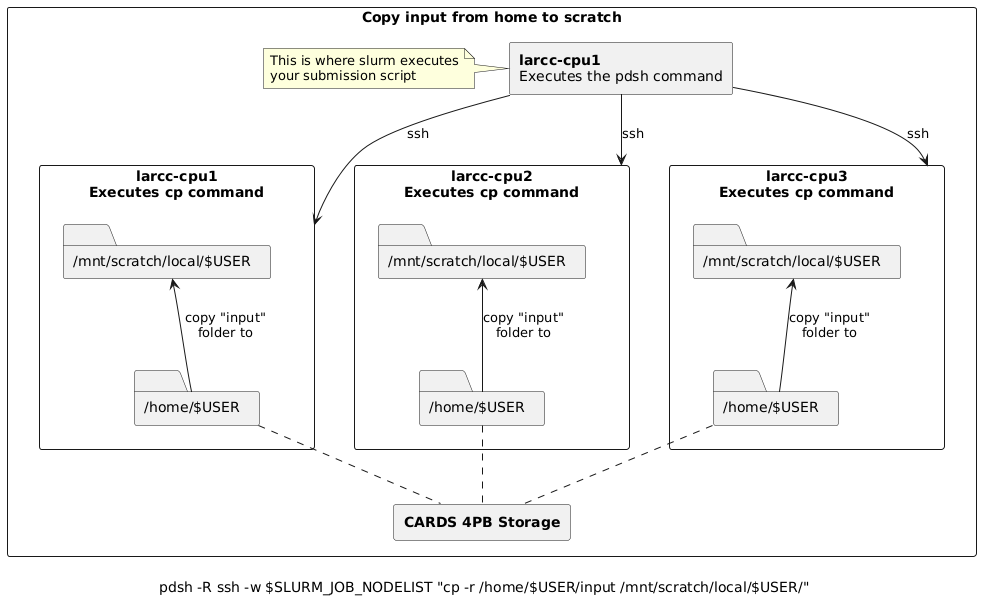
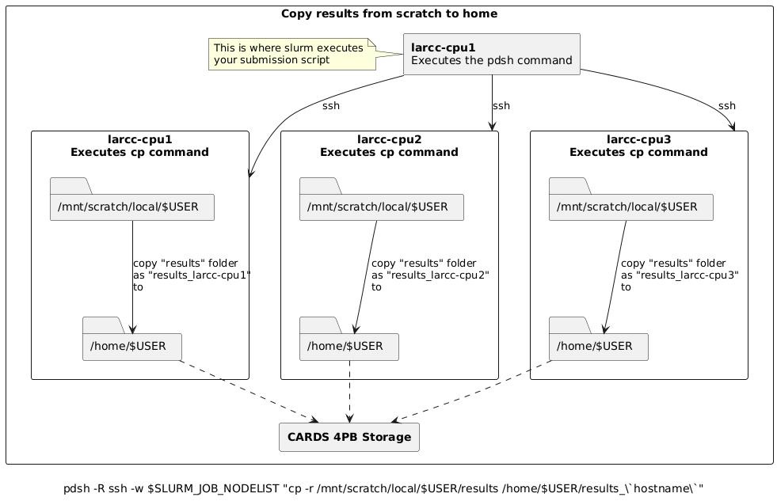

Understanding Storage on Compute Nodes
When working on any compute node within the system, there are
two primary types of storage available to users: scratch storage and home storage.
These are illustrated in the diagram below:
{kind=link}

Storage Types
scratch Storage
Local to each compute node: This means it is not shared across nodes.
High performance: Offers significantly faster read/write speeds compared to
homestorage.Limited capacity: Typically smaller in size, so it’s best suited for temporary files and high-speed I/O operations during job execution.
Data retention policy: ALL DATA IS REMOVED after a job finishes.
home Storage
Shared across all nodes: Accessible from any compute node in the system.
Large capacity: Designed to store a user’s persistent data, such as source code, datasets, and results.
Slower access: Due to its shared nature, read/write operations are generally slower than
scratchstorage.Data retention policy: Data is kept as this storage space is designed to hold persistent data.
Recommended Workflow
A common and efficient workflow for running jobs on the system is:
Prepare Input Data: Copy necessary input files from your
homestorage to the node’s localscratchstorage at the start of your job.Run the Application: Configure your application to read from and write to the
scratchstorage during execution. This takes advantage of its high-speed performance.Save Results: Once the job completes, copy the output files back to your
homestorage for long-term retention.
See Section Copying data between home and scratch for more information on how to implement this worflow.
Note
Always ensure that your input and output data will fit within the available space on scratch storage.
If your files exceed this capacity, you may need to adjust your workflow accordingly.
Copying Data Between Home and Scratch
To efficiently transfer data between your shared home storage and node-local scratch storage, you can use pdsh—a parallel remote shell client that executes commands across multiple nodes simultaneously.
The general template for the pdsh command includes three key components:
-R ssh: Specifies SSH as the remote shell method (always usessh).-w $SLURM_JOB_NODELIST: Targets all nodes allocated to your job.Remote command: Executes on each node, leveraging the fact that
homeis shared whilescratchis local.
Below are common usage patterns:
Copy input data from home to scratch on all nodes
pdsh -R ssh -w $SLURM_JOB_NODELIST "cp -r /home/$USER/input /mnt/scratch/local/$USER/"
For example, assume you submitted a batch job requesting 3 nodes and slurm allocated larcc-cpu[1-3] such
that larcc-cpu1 is chosen as the node where the batch script is to be executed from. Then, the pdsh
command above would:
Create 3 (parallel) ssh sessions from
larcc-cpu1to itself,larcc-cpu2andlarcc-cpu3.Within each session, instruct the node to copy the folder
/home/$USER/inputto/mnt/scratch/local/$USER/
{kind=link}

Copy results from scratch to home
Warning
When copying results back to home, ensure unique filenames or directories to prevent nodes from overwriting each other’s output.
The commands below use the node’s hostname as a suffix to avoid conflicts.
# Copy results from scratch to home, appending hostname to avoid overwrites
pdsh -R ssh -w $SLURM_JOB_NODELIST "cp -r /mnt/scratch/local/$USER/results /home/$USER/results_\`hostname\`"
# Alternatively, move results from scratch to home
pdsh -R ssh -w $SLURM_JOB_NODELIST "mv /mnt/scratch/local/$USER/results /home/$USER/results_\`hostname\`"
For example, assume you submitted a batch job requesting 3 nodes and slurm allocated larcc-cpu[1-3] such
that larcc-cpu1 is chosen as the node where the batch script is to be executed from. Then, the pdsh
commands above would:
Create 3 (parallel) ssh sessions from
larcc-cpu1to itself,larcc-cpu2andlarcc-cpu3.Within each session, instruct the node to copy (or move if using
mv) the folder/mnt/scratch/local/$USER/resultsto/home/$USER/, appending_followed by the node’s hostname to the copy. i.e.,# larcc-cpu1 executes: cp -r /mnt/scratch/local/$USER/results /home/$USER/results_larcc-cpu1 # larcc-cpu2 executes: cp -r /mnt/scratch/local/$USER/results /home/$USER/results_larcc-cpu2 # larcc-cpu3 executes: cp -r /mnt/scratch/local/$USER/results /home/$USER/results_larcc-cpu3
{kind=link}

Simplified Copy for Aggregated Results
If your application aggregates results on the submission node (e.g., via MPI reduction), and per-node outputs are not needed,
you can use a standard copy command instead of pdsh.
Batch Script Example
Here’s how this workflow fits into a typical Slurm batch script:
#!/bin/bash
#SBATCH ...
# Copy input to scratch
pdsh -R ssh -w $SLURM_JOB_NODELIST "cp -r /home/$USER/input /mnt/scratch/local/$USER/"
# Run your application
# ...
# Copy results back to home
pdsh -R ssh -w $SLURM_JOB_NODELIST "cp -r /mnt/scratch/local/$USER/results /home/$USER/results_\`hostname\`"
For aggregated results (e.g., via MPI reduction):
#!/bin/bash
#SBATCH ...
# Copy input to scratch
pdsh -R ssh -w $SLURM_JOB_NODELIST "cp -r /home/$USER/input /mnt/scratch/local/$USER/"
# Run your application
# ...
# Copy final results from scratch to home
cp -r /mnt/scratch/local/$USER/results /home/$USER/